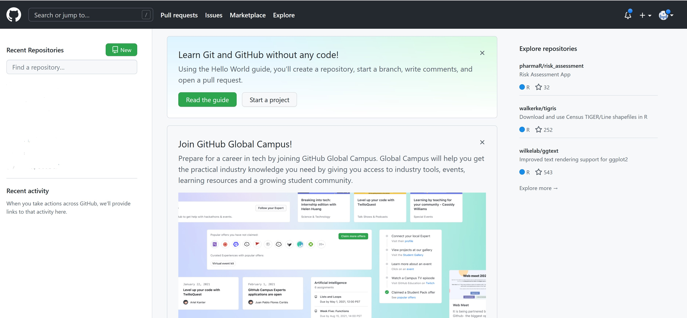

Content
Introducing Version Control
git and github
Creating a GitHub account
Installing git
Connecting git and github with RStudio
Getting Started working with git and github
12 Feb 2026
A simple database that kept all the changes to files under revision control.
A single server that contains all the versioned files, and a number of clients that check out files from that central place. For many years, this has been the standard for version control.
In a DVCS (such as Git, Mercurial, Bazaar or Darcs), clients don’t just check out the latest snapshot of the files; rather, they fully mirror the repository, including its full history. Thus, if any server dies, and these systems were collaborating via that server, any of the client repositories can be copied back up to the server to restore it. Every clone is really a full backup of all the data.

The easiest way to get started is to create an account on GitHub.com (it’s free).

Create account.Once you are in, it will look something like this:

It should return something like below.

If you get an error, you will have to install git
Windows users will have to install git software by following the steps given below:
Important
It is important to provide the installer Administrator right when installing Git.
This step aims to tell RStudio where to find the Git installation.
Tools -> Global Options…, click on Git/SVN.Your screen should look similar to the screenshot below.

If there is not setting or the setting is at the wrong path,
Browse button behind Git executable:.Apply button to confirm the changes.OK button to close the window.Checking by using git_sitrep()
Before using git and github in RStudio, it is useful for us the check if github are connected proper with the local computer.
If you already have a PAT, your Console window should look similar to the screenshot below.

Note: The above is an subset of the complete list display on the screen.
Before we move on, we assume that you have the PAT available on the clipboard of your computer.
If you don’t have a PAT stored already, it will prompt you to enter your PAT.
If you do already have a stored credential, gitcreds::gitcreds_set() reveals this and will even let you inspect it as shown in the screenshot on the right.